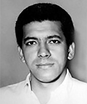

<style>
section {
        display: flex;
        flex-direction: row;
        align-items: center;
        justify-content: center;
        gap: 40px;
        margin: 40px 0;
    }


    .conteudo {
        max-width: 1000px;
        font-family: Arial, sans-serif;
        font-size: 16px;
        line-height: 1.6;
        color: #333;
        text-align: justify;
    }

    .conteudo p {
        
        margin-bottom: 16px;
    }
    img {
        width: 300px;
        height: auto;
        border-radius: 8px;
    }
</style>
<section>

    <div class="conteudo">

        <h2>CÉLIO COSTA</h2>
        
        <p>Economista, nasceu em 19 de dezembro de 1953, em Porto Nacional, atual estado do Tocantins. É filho de Joaquim Costa Júnior e Terezinha de Jesus Costa. Foi deputado estadual por Goiás durante a 11ª Legislatura (1987–1991), tendo assumido o mandato como suplente pelo PMDB, em 2 de janeiro de 1989. Teve papel relevante nas articulações políticas que resultaram no apoio do então candidato a governador Henrique Santillo ao projeto de criação do Estado do Tocantins, apoio considerado decisivo para o desfecho favorável à emancipação do norte goiano.</p>
        <p>É autor do livro "O Estado do Tocantins: Uma Geopolítica de Desenvolvimento", estudo técnico que apresentou argumentos sobre a viabilidade econômica e territorial da nova unidade federativa, servindo como subsídio ao movimento de criação do estado. Na esfera administrativa, ocupou cargos como Diretor Técnico e Diretor de Planejamento da Companhia de Desenvolvimento de Goiás (CODEG). Posteriormente, também colaborou com o movimento pela criação do estado do Carajás, tendo exercido a função de Secretário de Planejamento do município de Parauapebas, no Pará.</p>
        
    </div>
    <div class="imagem">
        
        </div>

    

    


</section>